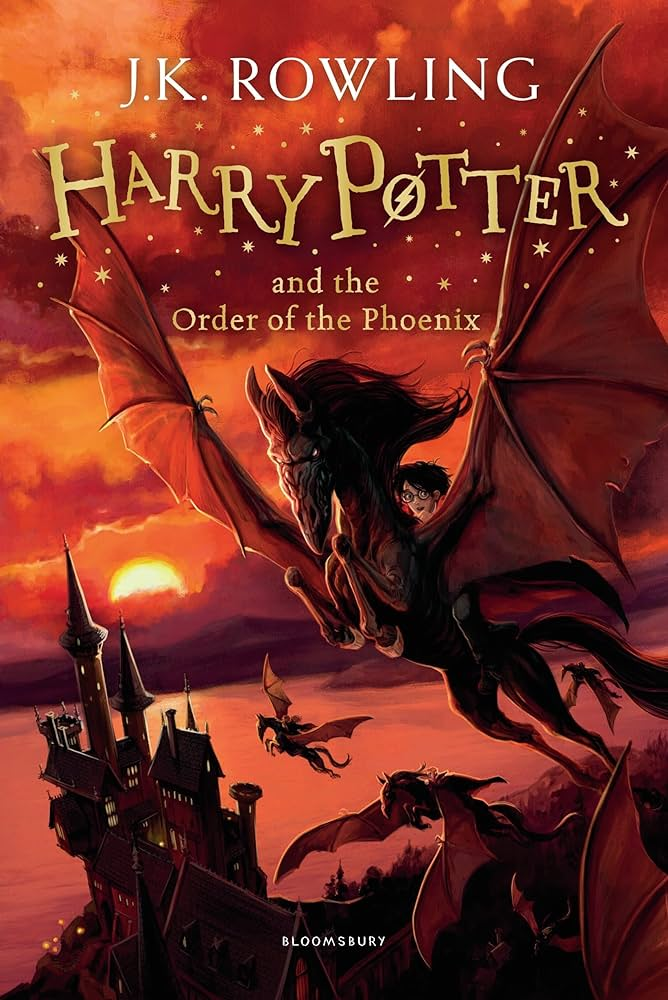

Written by: J.K.Rowling
Harry Potter and the Order of the Phoenix is a fantasy novel written by British author J. K. Rowling and the fifth novel in the Harry Potter series. It follows Harry Potter's struggles through his fifth year at Hogwarts School of Witchcraft and Wizardry, including the surreptitious return of the antagonist Lord Voldemort, O.W.L. exams, and an obstructive Ministry of Magic. The novel was published on 21 June 2003 by Bloomsbury in the United Kingdom, Scholastic in the United States, and Raincoast in Canada. It sold five million copies in the first 24 hours of publication.